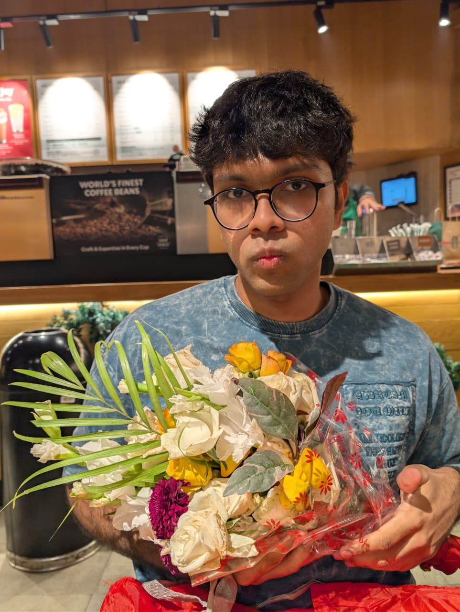

A systems-focused analyst turning fragmented enterprise metrics into sleek operational realities. I reduce processing friction by removing complex layers, not adding them.
Axis Bank Integration Systems
Deconstructing corporate banking frameworks to engineer smooth system integrations. Managed multi-institutional data alignments, minimized operational processing risks, and successfully owned system deployments under tight timelines.
Advanced relational database structures (RDBMS) execution. Writing clean, highly optimized SQL queries using analytical window functions, alongside structuring multilayered Power BI dashboard pipelines for executive reporting.
Translating high-level business problems into ironclad technical blueprints. Authoring comprehensive BRDs/FRDs, mapping end-to-end user journeys, and managing cross-functional technical teams through production sprints.
By designing and deploying a target event evaluation trigger, our team transformed a legacy system processing ceiling—lifting active communication response metrics up from an 18% flat baseline to a massive 88% engagement spike, without introducing calculation latency.
It has to happen. Garlic bread is serious. And very good. This is the intense focused energy I bring to deconstructing legacy system parameters... or just ensuring the first bite is exactly right.
There's standard communication, and then there's standard *gifts*. The expression might be complex data, but the flowers are clear metrics: I genuinely care. That's a good data baseline.

Before the recursive logic loops can start, we need a core data baseline. It always begins with strong coffee and direct eye contact. A simple architectural fundamental.
Navigating rugged paths builds endurance, but sometimes you just need to think. This distinctive typography shirt is the official ‘processing complex concepts’ uniform. Net Performance: Up.